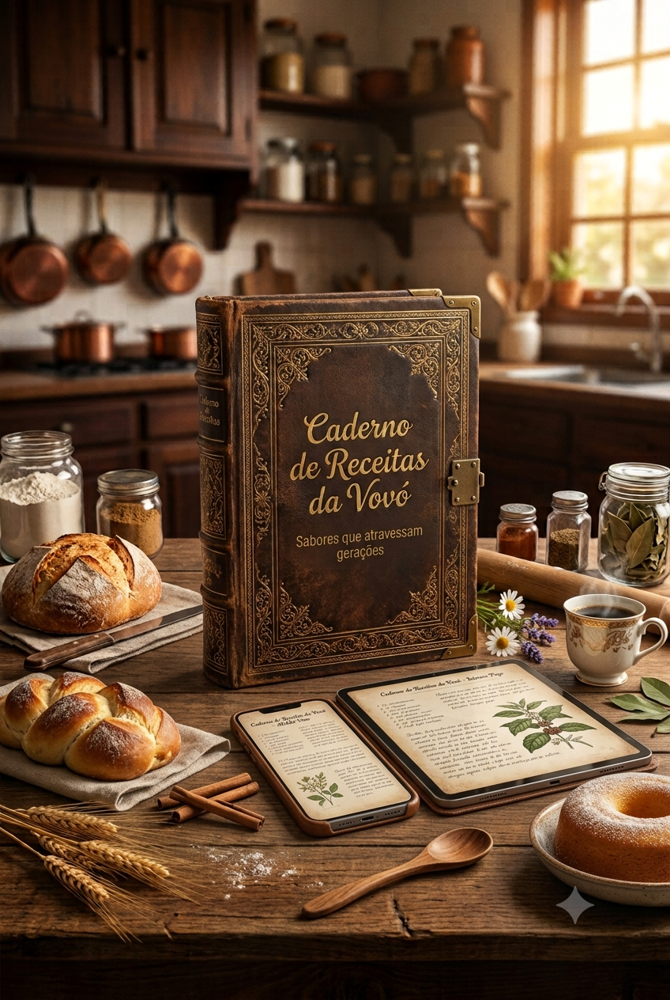
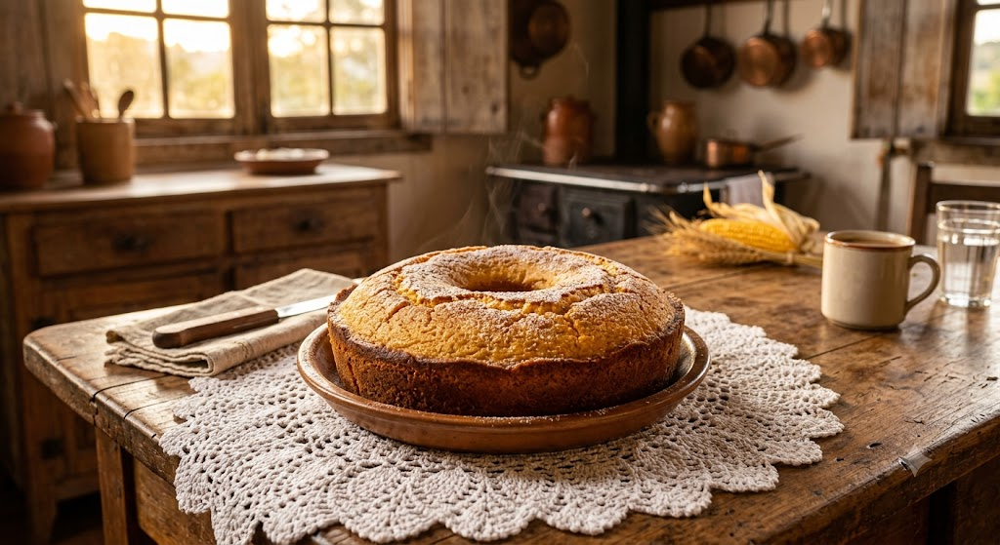
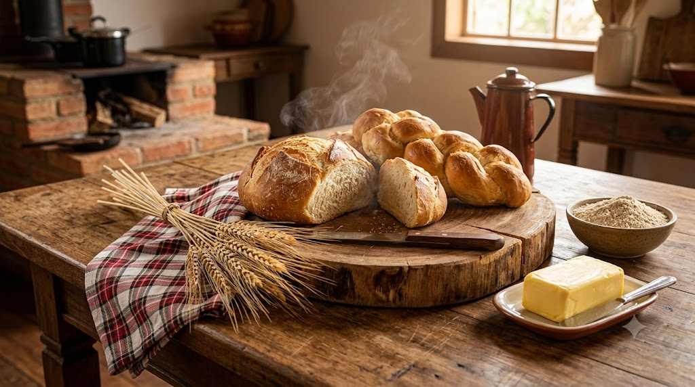
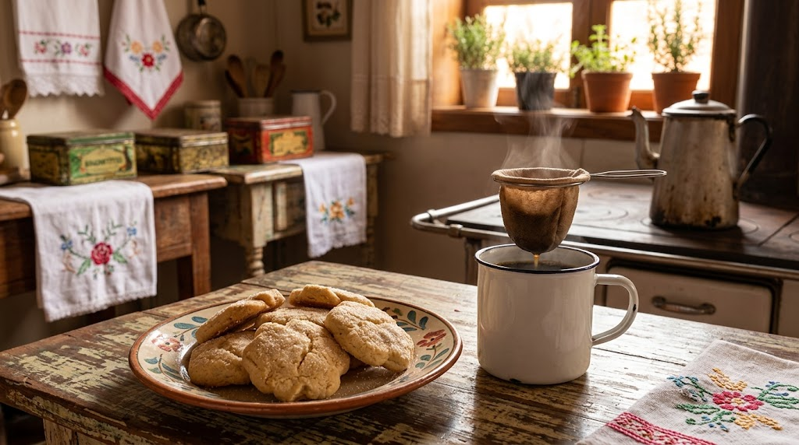
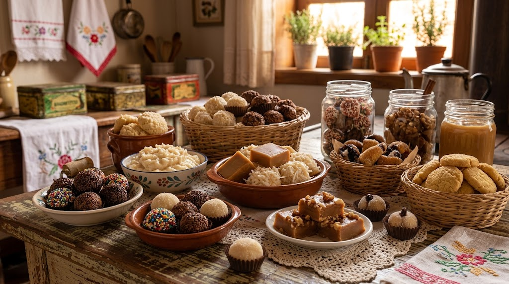

Resgate receitas antigas da família, prepare momentos especiais e leve para sua mesa os sabores que atravessaram gerações.

Um resgate dos sabores tradicionais para criar novas memórias em família.
Receitas tradicionais de pães macios, saborosos e fáceis de preparar.
Bolos fofinhos com aquele sabor especial da cozinha da vovó.
Receitas perfeitas para acompanhar um café fresquinho.
Receitas feitas para reunir pessoas especiais ao redor da mesa.
Uma pequena amostra das delícias que você encontrará no eBook.




Um material completo para você preparar receitas deliciosas todos os dias.
Uma coleção completa de receitas tradicionais para todos os momentos.
Bolos, pães, doces, massas, salgados e receitas especiais.
Passo a passo simples para qualquer pessoa conseguir preparar.
Leia pelo celular, tablet ou computador quando quiser.
Veja como o Caderno de Receitas da Vovó ajuda a trazer memórias para a cozinha.
"Adorei as receitas! Parece que voltei para a cozinha da minha avó. Tudo muito bem explicado e fácil de fazer."
"O livro é lindo e cheio de receitas que fazem parte da nossa história. Já preparei várias para minha família."
"Um material muito organizado. As receitas são simples, saborosas e lembram os melhores momentos em família."
Tenha acesso imediato a mais de 300 receitas tradicionais.
Pagamento seguro e liberação imediata do eBook.
Quero meu eBook agoraVocê pode acessar o material e, caso não esteja satisfeito, solicitar a devolução dentro do prazo de garantia.
Após a confirmação do pagamento, você recebe o acesso digital para baixar o arquivo.
Sim. O eBook funciona em celular, tablet ou computador.
Não. As receitas foram organizadas para facilitar o preparo mesmo para iniciantes.
O acesso é vitalício.